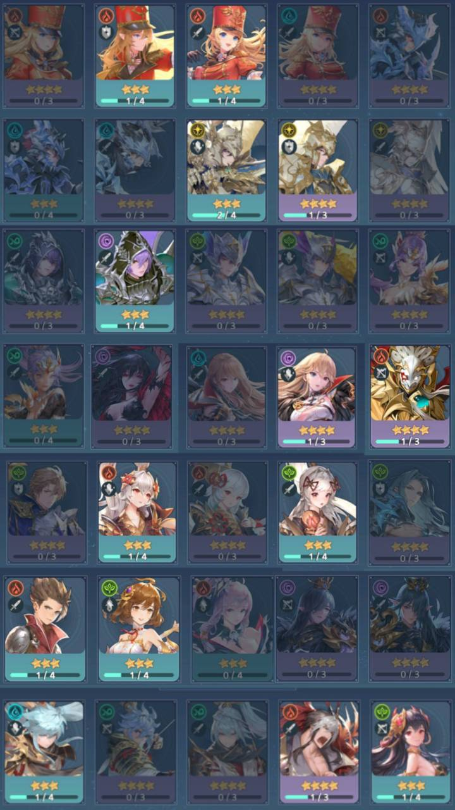
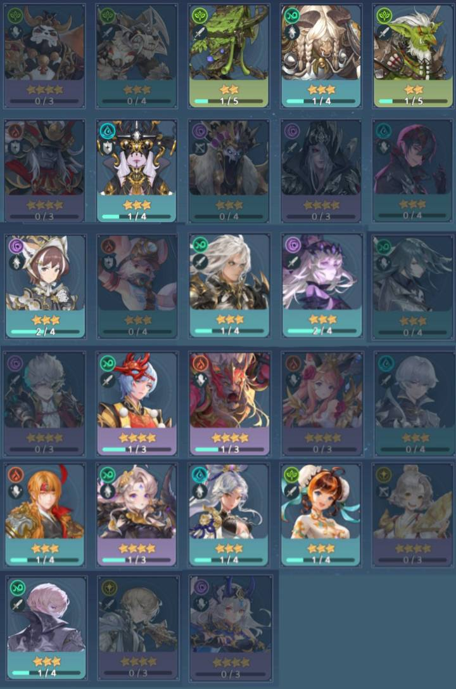

ตัวละคร
ตัวละครที่นำเอามาจากภาคเเรก
ตัวละครอื่นๆ
ตัวละครข้างต้นยังเป็นตัวละครเเพทเกมล่าสุดนะวันที่ 28/9/2565
อาจจะสงสัยว่าทำไมมีตัวละครซ้ำกันทำไมถึงเอามา ถ้าเราสังเกตุดีๆ ตัวละครซ้ำกันเเต่ธาตุหรืออาวุธจะไม่ซ้ำกัน ที่ทางตัวเกมทำอย่างงั้น เนื่องจากทางผู้ผลิตต้องการให้ผู้เล่นได้เล่นตัวละครโปรดของเราในรูปแบบต่างๆที่เเตกต่างกันไป
กรณีมองรูปไม่ชัด
>ตัวละครที่นำเอามาจากภาคเเรก<
>ตัวละครอื่นๆ<
เครดิตทั้งหมด
วีดีโอ :https://youtu.be/v9co9JZulSA
ttps://www.youtube.com/embed/iPFQKalQbok?start=384
รูปบรรยากาศในเกม 4รูป :https://skr.netmarble.com/gallery